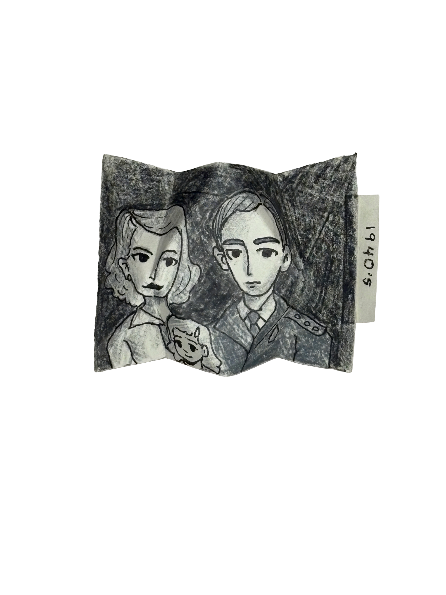

StuyTown was originally planned as a post-war housing development for the returning World War II veterans and their families. Built by MetLife between 1945 and 1947, StuyTown was filled with young middle class nuclear families, but more importantly, it was racially segregated. There was a strict Whites-only policy, leading to a very conservative and exclusive feeling surrounding the residential area.